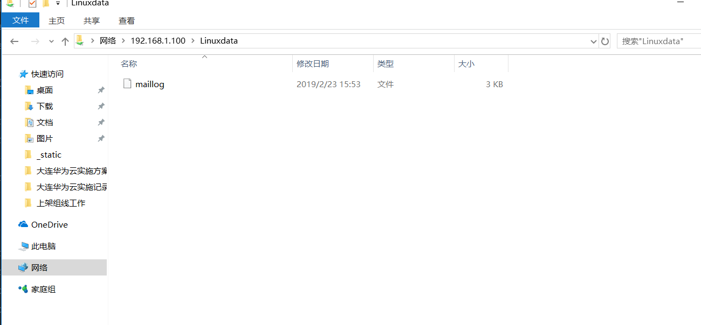

Contents
2.9. Samba服务器搭建¶
2.9.1. Samba的概念和功能¶
Samba 是一个能让 Linux 系统应用 Microsoft 网络通信协议的软件。而 SMB 是 Server Message Block的缩写，即服务器消息块 ，SMB主要作为Microsoft的网络通信协议。后来Samba将SMB通信协议应用到了Linux系统上，就形成了现在的Samba软件。后来微软又把 SMB 改名为 CIFS（Common Internet File System，公共Internet文件系统），并且加入了许多新的功能，于是，Samba具有了更强大的功能。
Samba 最大的功能就是可以用于 Linux 与 Windows 系统直接的文件共享和打印共享。Samba既可以用于Windows与Linux之间的文件共享，也可以用于Linux与Linux之间的资源共享。由于NFS（网络文件系统）可以很好地完成Linux与Linux之间的数据共享，因而Samba较多地用在了Linux与Windows之间的数据共享上面。
SMB是基于客户机/服务器模型的协议，因而，一台Samba服务器既可以充当文件共享服务器，也可以充当一个Samba的客户端。例如，对于一台在Linux下已经架设好的Samba服务器，Windows客户端就可以通过SMB协议共享Samba服务器上的资源文件，同时，Samba服务器也可以访问网络中其他Windows系统或者Linux系统共享出来的文件。
Samba在Windows下使用的是NetBIOS协议，如果要使用Linux下共享的文件，请确认Windows系统下是否安装了NetBIOS协议。
2.9.2. Samba的安装与配置¶
这里的系统环境如下所示。
操作系统：CentOS Linux release 7.1.1503
Samba服务器IP地址：192.168.0.100
Samba版本：samba-4.1.12-23.el7_1.x86_64
1.安装Samba¶
几乎所有的Linux发行版本中都默认自带了Samba软件包，登录系统，检查是否安装了Samba软件，执行如下操作。
[root@localhost ～]# rpm -q samba
samba-4.1.12-23.el7_1.x86_64
如果有显示，表示系统已经安装了Samba，如果没有任何显示，请从系统光盘中找到对应的Samba软件包，然后进行安装。 Samba的安装很简单，安装过程如下。
[root@localhost ～]# yum -y install samba samba-client samba-common
Samba服务器安装完毕，会生成配置文件目录/etc/samba和其他一些Samba可执行命令工具，
/etc/samba/smb.conf 是 Samba 的核心配置文件，
/usr/lib/systemd/system/smb.service 是Samba的启动/关闭文件。
2.Samba服务的组成与使用¶
Samba的运行有两个服务组成，一个是SMB，另一个是NMB。
SMB是Samba的核心启动服务，只有SMB服务启动，才能实现文件的共享。
而NMB服务是负责解析用的，类似于DNS实现的功能，NMB可以把Linux系统共享的工作组名称与其IP对应起来，如果NMB服务没有启动，就只能通过IP来访问共享文件。
例如，如果某台Samba服务器的IP地址为192.168.0.100，对应的工作组名称为ixdba，那么在Windows的IE浏览器地址栏中输入下面两条指令都可以访问共享文件。
其实这就是在Windows下查看Linux Samba服务器共享文件的方法。
\\192.168.0.100\共享目录名称
\\ixdba\共享目录名称
可以通过systemctl start/stop/restart smb来启动、关闭、重启SMB服务。启动SMB服务的操作如下所示。
[root@localhost system]# systemctl start smb
[root@localhost system]# ps -ef|grep smbd
root 5315 1 0 15:44 ? 00:00:00 /usr/sbin/smbd
root 5316 5315 0 15:44 ? 00:00:00 /usr/sbin/smbd
root 5382 3037 0 15:50 pts/0 00:00:00 grep --color=auto smbd
从启动的输出中，可以看出，SMB服务包含一个父进程和一个子进程。
接下来详细讲述smb.conf文件的属性配置。 ### 3.核心配置文件smb.conf 默认的 smb.conf 有很多个选项和内容，比较繁琐，这里从简单讲起，先备份自己的smb.conf文件，然后重新建立一个smb.conf，添加如下内容。
[global]
workgroup = IXDBA.NET
netbios name = ixdba
server string = My Linux Samba Server
log file = /var/log/samba/%m.log
security = user
map to guest =Bad User
[Linuxdata]
path = /ixdba/Linuxdata
writeable = yes
browseable = yes
guest ok = yes
上面每行的解释如下。
[global]表示以下内容为全局配置，为必选项。
workgroup 用来定义工作组，也就是 Windows 中的工作组概念，这里设置为IXDBA.NET。
netbios name用来定义Windows中显示出来的计算机名称。
server string用来定义Samba服务器的说明信息，可以随便指定。
log file用来定义Samba用户的日志文件，
%m代表客户端主机名，Samba服务器会在指定的目录中为每个登录主机建立不同的日志文件。
security用来定义数据共享的方式。此选项有多个可选值，常用的有user、share、server和domain，user表示需要密码验证后才能共享数据，share表示可以直接共享数据，无须输入密码。在Samba 4中share和server两个选项已经被禁用，如果要实现无密码登录，需要添加“security=user”和“map to guest =Bad User”两个选项。
[Linuxdata]用来设定在Windows中显示出来的共享目录的名称。
path用来指定共享的目录，为必选项。
writeable用来设置是否可写，yes表示可写，no表示不可写。
browseable用来定义是否可以在Windows工作组下看到共享文件夹，如果需要隐藏共享文件夹，选择no即可。
guest ok用来定义匿名用户是否可以登录，如果security设置为user，此选项默认值为no。
4.建立共享目录¶
上面设置了共享目录为/ixdba/Linuxdata，下面就需要建立/ixdba/Linuxdata目录。
[root@localhost ～]# mkdir -p /ixdba/Linuxdata
[root@localhost ～]# chown -R nobody:nobody /ixdba/Linuxdata
因为要设置匿名用户可以下载或上传共享文件，所以要给/ixdba/Linuxdata 目录授予nobody权限。
[root@localhost Linuxdata]# cp /root/install.log* /ixdba/Linuxdata
上面的指令把一些测试文件复制到共享目录中。
5.重启SMB服务¶
执行如下命令重启SMB服务。
[root@localhost samba]# systemctl restart smb.service
[root@localhost samba]# ps -ef|grep smb
root 7290 1 0 17:49 ? 00:00:00 /usr/sbin/smbd
root 7291 7290 0 17:49 ? 00:00:00 /usr/sbin/smbd
6.访问Samba服务器的共享文件¶
（1）在Windows下访问Samba服务器的共享文件
在浏览器地址栏或者运行框中输入以下地址：
\\192.168.60.231 或者 \\ixdba
就看到打开共享目录了，这里的ixdba是smb.conf中netbios name选项定义的名

（2）在Linux下访问Samba服务器的共享文件
在Linux作为客户端时，要查看其他Linux Samba服务器共享的文件，应该如何操作呢？这就要用到smbclient这个工具。系统默认自带了这个命令。
smbclient常见用法介绍如下。
1）查看Samba服务器的共享资料。
smbclient –L //Samba服务器的IP地址 -U Samba用户名
“-L”即为list的含义，“-U”是user的意思。要建立一个Samba用户，需要通过Samba提供的命令pdbedit来实现。pdbedit用法如下。
pdbedit –a 用户名
需要注意的是，要建立的Samba用户必须先是系统用户。例如，要建立一个名为admin的Samba用户，操作如下。
[root@localhost samba]# useradd admin
[root@localhost samba]# pdbedit –a admin
new password:
如果Samba服务器无密码即可访问，可以省略“-U Samba用户名”。 例如：当Samba需要密码才能登录时，查看共享方法如下。
[root@web ～]# smbclient -L //192.168.60.231/Linuxdata –U admin
Password: 在这里输入admin的密码
当Samba无密码即可访问时，执行如下命令。
[root@web ～]# smbclient -L //192.168.60.231/Linuxdata
Password: 直接按Enter键即可
2）登录Samba服务器。 如果需要在Linux客户端登录Samba服务器，用法如下。
smbclient //Samba服务器的IP地址 -U Samba用户名
请看下面执行的操作。
[root@web samba]# smbclient //192.168.60.231/Linuxdata
Password:
Enter admin's password:
Domain=[IXDBA.NET] OS=[Unix] Server=[Samba 4.1.12].
smb: \> ls
smb: \> ? #在这里输入"?"即可查看在smb命令行可用的所有命令
7将Samba服务器共享的目录挂载到一个Linux客户端，操作过程如下所示。¶
[root@web /]# yum install cifs-utils cifs-utils-devel
[root@web /]# mount -t cifs -o username=admin,password=****** \
>//192.168.60.231/Linuxdata /samba
Password:
[root@web /]# df -Th|grep /samba
//192.168.60.231/Linuxdata cifs 8.5G 5.0G 3.5G 60% /samba
[root@web /]# uname -a
Linux localhost.localdomain 3.10.0-229.el7.x86_64 #1 SMP Fri Mar 6 11:36:42 UTC 2015 x86_64 x86_64 x86_64 GNU/Linux
这里的操作系统环境为 CentOS 7.1 版本。在 CentOS 5.x 以前的版本中， 还存在一个smbmount命令，是专门用于挂载Samba共享数据用的，此命令从CentOS 5开始被取消。 例如，下面是在CentOS 4.x版本中的操作过程。
[root@localhost ～]# uname -a
Linux localhost 2.6.9-22.ELsmp #1 SMP Mon Sep 19 18:32:14 EDT 2005 i686 i686 i386 GNU/Linux
[root@localhost ～]# smbmount //192.168.60.231/Linuxdata /samba
Password:
[root@localhost ～]# df -Th|grep /samba
//192.168.60.231/Linuxdata smbfs 8.5G 5.0G 3.5G 60% /samba
由此可见，Samba共享文件系统格式在CentOS 5.x以前版本称为smbfs，而从CentOS 5开始变为CIFS。
8.授权登录samba服务器¶
面介绍了Samba服务器匿名共享数据的设置方法。而在很多时候， 对共享的数据是需要进行权限控制的，也就是说，用户在访问Samba服务器时需要输入用户名和密码。下面就介绍如何配置有权限控制的Samba服务器。
（1）添加系统级用户
这里首先添加 ixdba1、ixdba2 两个系统级用户， 并分别指定工作目录为/ixdba/ixdba1 和/ixdba/ixdba2，操作如下。
[root@localhost /]# useradd -d /ixdba/ixdba1 ixdba1
[root@localhost /]# useradd -d /ixdba/ixdba2 -s /sbin/nologin ixdba2
[root@localhost /]# cp -r /root/* /ixdba/ixdba1
[root@localhost /]# cd /ixdba
[root@localhost ixdba]# ll
其中，useradd 是创建系统用户的命令，
参数“-d”指定 ixdba1 用户的工作目录，而 ixdba1就是创建用户的名称，
“-s”指定用户使用的默认shell，/sbin/nologin表示ixdba2是个虚拟用户，
也就是ixdba2不能通过shell登录系统。
这些概念在下面章节有详细的讲述，这里不再介绍。
每当创建一个用户时，Linux系统都会在/etc/passwd文件中添加一行对应的用户名信息，
这里仅仅用到的是/etc/passwd文件中的用户名信息，
因此，不必对两个用户设置登录系统的密码。
（2）创建Samba登录用户 这里需要注意的是：系统用户是 Linux 上面对应的用户， 而 Samba 用户是客户端连接Samba 服务器时需要使用的用户。 创建 Samba 用户使用的命令有 pdbedit 和 smbpasswd。smbpasswd 的原理是通过读取/etc/passwd 文件中存在的用户名， 进而设置密码的，因此，对于系统用户，可以设置密码，也可以不设置密码。 如果设置密码，可以和对应的Samba用户密码相同，也可以不同。 下面分别为ixdba1和ixdba2设置Samba服务器的登录密码，操作如下。
[root@localhost samba]# smbpasswd -a ixdba1
New SMB password:
Retype new SMB password:
Added user ixdba1.
[root@localhost samba]# smbpasswd -a ixdba2
New SMB password:
Retype new SMB password:
Added user ixdba2.
这样设置完毕，就可以用ixdba1和ixdba2在客户端登录Samba服务器了。
（3）配置smb.conf文件 Samba配置的核心文件是smb.conf，设置好的配置文件如下。
[global]
workgroup = IXDBA.NET
netbios name = ixdba
server string = My Linux Samba Server
log file = /var/log/samba/%m.log
max log size = 50
security = user
encrypt passwords = yes
smb passwd file = /etc/samba/smbpasswd
socket options = TCP_NODELAY SO_RCVBUF=8192 SO_SNDBUF=8192
#interfaces = 192.168.1.254/24 192.168.2.254/24
os level = 33
[ixdba1]
path = /ixdba/ixdba1
comment = This is ixdba1
valid users = ixdba1
writeable = yes
browseable = yes
[ixdba2]
path = /ixdba/ixdba2
comment = This is ixdba2
valid users = ixdba2
create mask = 664
directory mask = 775
writeable = yes
browseable = yes
这段配置与上面那个例子基本相同，只是增加了一些权限控制的东西。 新增的各个选项的含义如下所示。
max log size用来定义日志文件的大小，设置为0代表不做限制，默认单位是KB。
encrypt passwords 用来设定用户密码是否加密，yes 表示需要加密，否则，不加密。由于现在的Windows系统都以加密形式发送 SMB/CIFS 密码，因此这里选择yes。
smb passwd file用来指定Samba的密码文件。
socket options用来设定Samba服务器和客户端之间会话的Socket选项值，此项的设置可以优化数据传输速度。
os level用来设定Samba服务器的OS level，OS level的值为0～255，winNT的OS level为33，Windows 95/98的OS level是1，Samba服务器的OS level值至少要大于33。
comment是对共享目录的说明文件，自己可以定义说明信息。
valid users用来定义可以访问该Samba服务器的用户。
create mask用来定义客户端用户创建文件的默认权限，664表示对用户来可读写，对用户组可读写，对其他用户仅仅有只读权限。
directory mask用来定义客户端用户创建目录的默认权限，755表示对用户可读写并且可执行，对用户组和其他用户可读、可执行。
（4）测试Samba服务器 特别注意，在Samba服务器处于运行状态时，最好使Selinux处于关闭状态，不然，需要进行很多权限的设定。
所有设置完成后，重新启动SMB服务。然后在Windows客户端进行授权登录。在IE浏览器地址栏中输入192.168.1.100，然后按Enter键
如果需要对ixdba1用户下的文件或者目录进行权限控制， 只须在Linux服务器上对相应的文件或者目录进行权限设置即可。
最后，有一个小技巧，在Windows下通过“\\IP地址”的方式访问其他文件资源时，一般第一次需要输入密码，以后就无须输入密码即可直接登录了，那么如果要切换到其他Samba用户怎么办呢？可以在Windows下执行如下指令。
首先通过“开始”→“运行”，在“运行”界面中，输入“cmd”，打开命令窗口，在命令窗口中，输入“net use”命令查看现有的连接，然后执行“net use \\Samba服务器IP地址或者netbios名称\ipc$ /del”，删除Samba服务器已经建立的连接。或者执行“net use * /del”将现在所有的连接全部删除。最后，再次执行“\\IP地址”时，就可以切换用户了。
到此为止，Samba服务器的搭建已经介绍完毕。